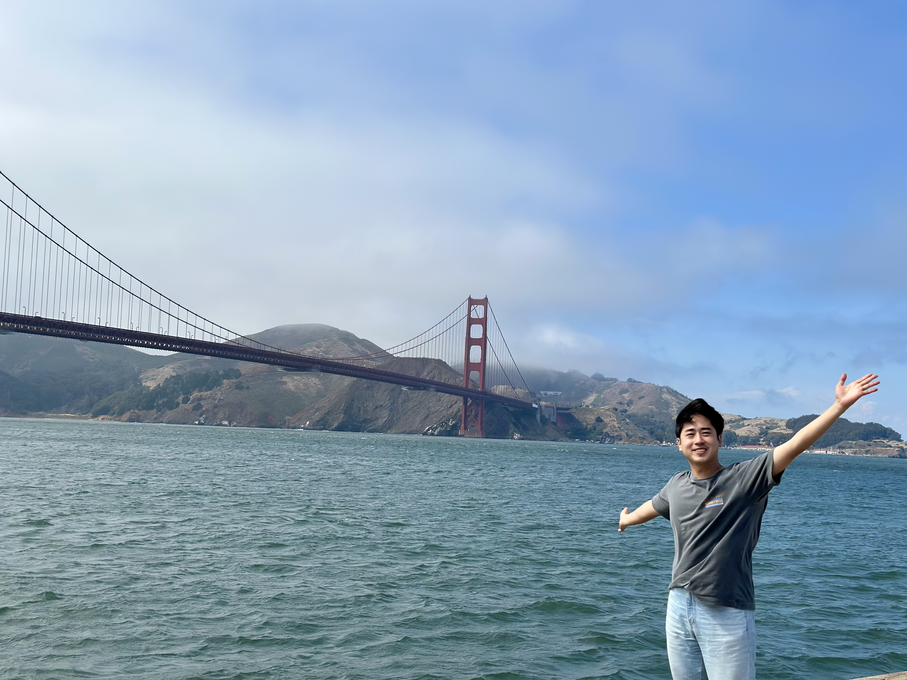

Passed PhD Qualifying Exam!🎉
May 2, 2024
I took the 3-hour full PhD Qualifying Exam and passed! Now I became a PhD candidate. Read more...
PhD Student in Civil and Environmental Engineering at UC Berkeley
Welcome! This is my first personal blog.
May 2, 2024
I took the 3-hour full PhD Qualifying Exam and passed! Now I became a PhD candidate. Read more...
April 19, 2024
I gave a talk about the need and use of fragility field to extend the Performance-Based Earthquake Engineering (PBEE) framework to a regional scale. Read more...
March 1, 2024
I am thrilled to announce the launch of my personal blog! This platform will serve as a space for me to share news, updates, information, and insights about my academic journey. Stay tuned for more updates! Read more...
February 1-2, 2024
I am excited to share that I attended and presented my study on regional-scale seismic simulations at the 2024 NHERI Computational Symposium. It was an enriching experience discussing our findings and connecting with other researchers in the field. Read more...